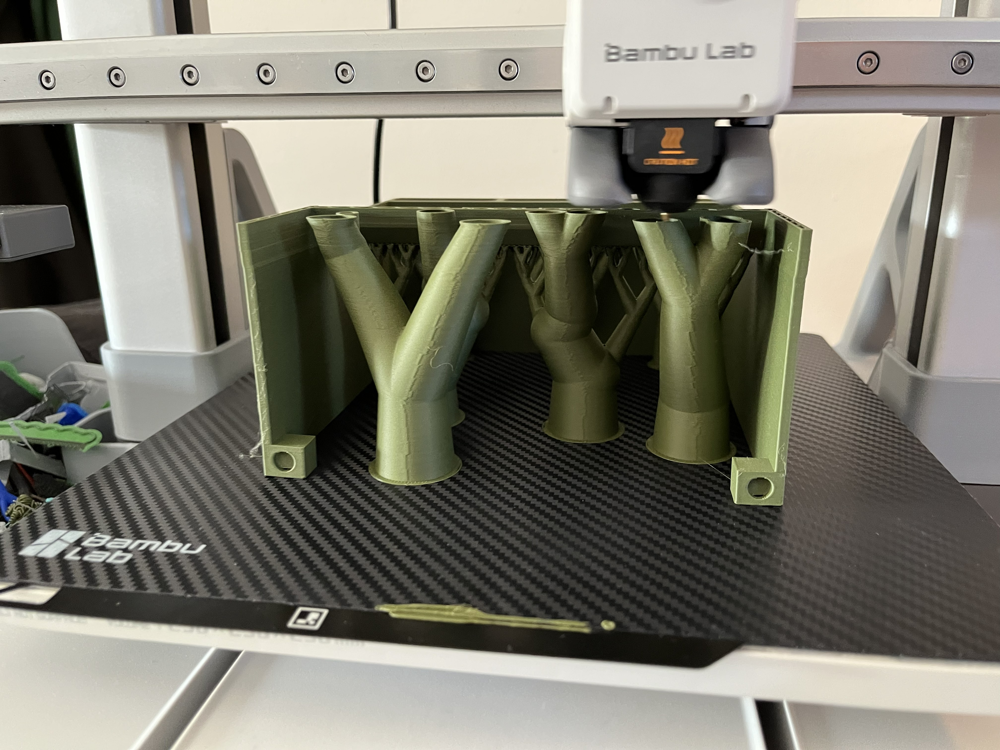
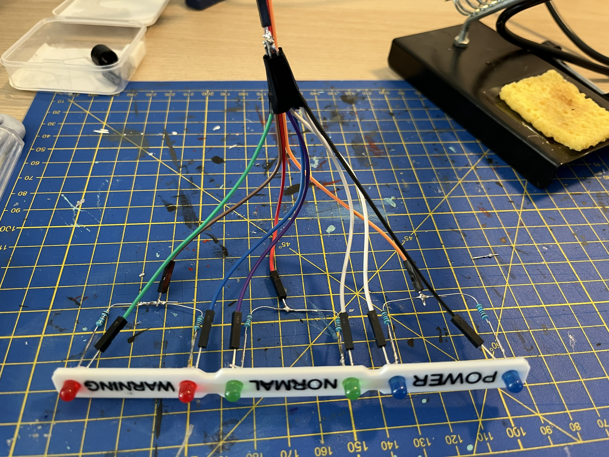
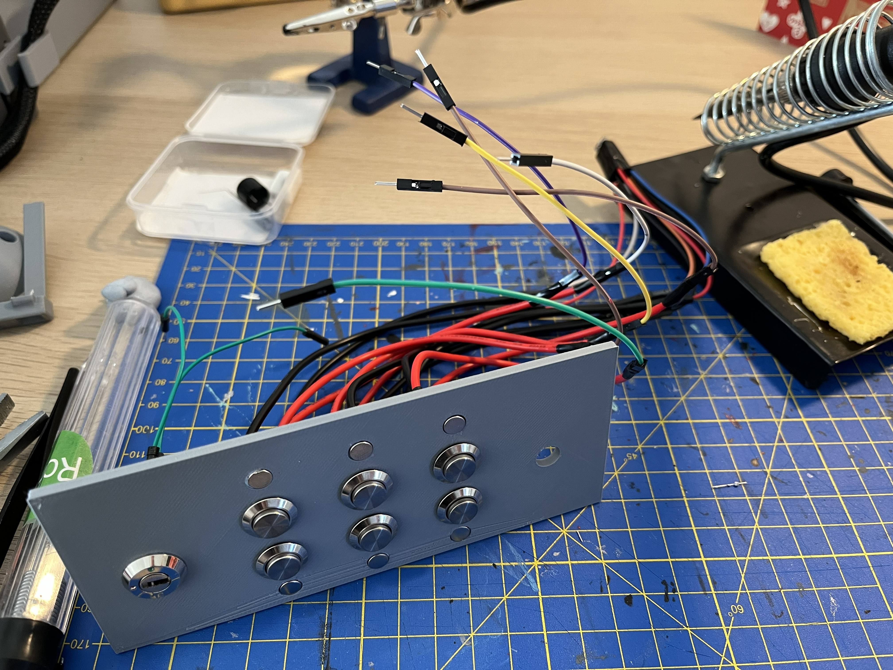
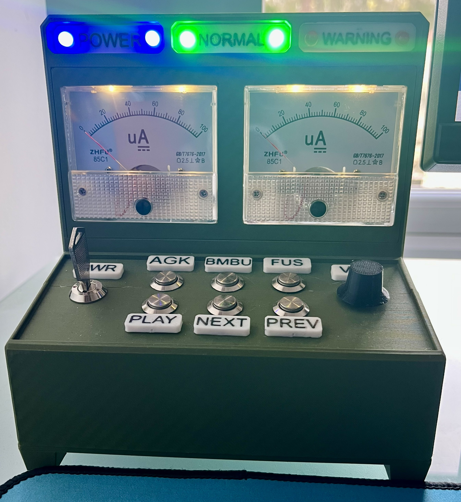

Computer Controller Project

Context to the projects
I had recetly bough a new 3D printer and wanted to create something unique for my PC that can teach me more about design, electronics and programming.
I wanted to create a custom computer controller that can be used to control various functions of my PC, such as volume & media playback. I also wanted to incorporate some unique design elements to make it visually appealing.
Design and Development
To design the controller, I used CAD software to create a 3D model of the device. I incorporated buttons, knobs, and two analog ammeters that I would use to display the PC's audio level and CPU usage.

After finalizing the design, I 3D printed the components and assembled the controller. I used an Arduino mega 2560 microcontroller to handle the input from the buttons and knobs, and to control the output to the ammeters.
I designed the controller to be both functional and aesthetically pleasing. I designed the controller to look industrial, enhancing the aesthetic of it.
Programming
programming the controller was the part that took the most time and effort. I hadn't coded annything like this before and it was going to be quite challenging.
I had to write two codes, one to gather the data and process it in the computer (written in python), which communcates with another code running on the arduino, this one processing the button inputs and displaying the data
After many iterations and many hours of debugging and troubleshooting, I was able to get the controller working as intended. The buttons and knobs control the desired functions, and the ammeters accurately display the audio level and CPU usage.
Overall, this project was a great learning experience that allowed me to develop my skills in design, electronics, and programming. It also resulted in a unique and functional computer controller that I can use and enjoy.
Gallery



